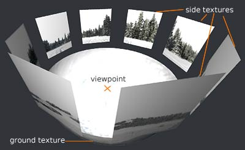

This is the Stellarium for Java FAQ (updated 28/11/2005), which contains answers to the most Frequently Asked Questions about the Stellarium for Java 3D planetarium simulator.
Stellarium is an open source desktop planetarium for Java platforms, including Linux/Unix, Windows and MacOSX. It renders the skies in realtime using OpenGL, which means the skies will look exactly like what you see with your eyes, binoculars, or a small telescope. Stellarium is very simple to use, which is one of its biggest advantages: it can easily be used by beginners.
The original Stellarium project was started by Fabien Chéreau during the summer of 2001 and uses Sourceforge intensively.
Stellarium for Java is the Java version of Stellarium. Access the Sourceforge project page here.
Stellarium for Java will check for improvements and new features from Stellarium after each major release, and will integrate them as needed.
Yes! Stellarium is open source software. Anyone has the right to download and use the software for free, to distribute it without modifying to other people, or modify the source code, all of this under the terms of the GNU Public License (GPL).
Via the download page. Stellarium is hosted on Sourceforge servers. After clicking on the right link of the download page, you will be taken to a list of Sourceforge servers, each with their location. Click on the file icon of the one geographically closest to you, it ensures a speedy download.
Your ideas and comments are invaluable to Stellarium. Have a look at the feedback page to see where you can get personal support, ask for new features, report bugs and even submit your own patches.
Java is a software development and execution plaftorm that allows a sofware to run on many lower-level platforms such as Windows, Linux, MacOS and many others. Java software is run by a JVM (Java Virtual Machine).
There is a number of reasons for providing a Java version of Stellarium. Among these are the need for portability accross platforms but also APIs (both OpenGL and Direct3D can be leveraged by Java3D), the opportunity to demonstrate how a complex C++ application can be written using Java (showing the latest language features of Java 5, as well as useful APIs such as Java3D, JOGL, Swing, I18N, and many others), and the need for evolutivity : we believe that there is much more room for evolutions of Stellarium through the Java path that through the C++ path. Aside these benefits is the ability for such an open source project to provide Java developers various software routines of interest for their own GPL software.
This argument was valid when Java first appeared (around 1996), but has become increasingly false with each new release. Some figures put JDK 1.0 at 20 to 40 times slower than C++. J2SE 1.4.2 is typically 1.1-1.3 times slower, and J2SE 1.5 (a.k.a. Java 5) is meant to be 1.2 to 1.5 times faster than its predecessor.
These numbers depend greatly on the coding style used. Java programmers must be good programmers in order to utilise Java efficiently, but that’s true of any language. Jack Shirazi's Java Performance Tuning site is a good source for performance tips, and links to tools and other resources.
A benchmarking of Java vs C++ by Keith Lea caused quite a stir. He found that Java may sometimes be faster than C++.
The speed-up in Java is mostly due to improvements in compiler design. The Hotspot technology introduced in J2SE 1.3 enables the run-time system to identify crucial areas of code that are utilised many times, and these are aggressively compiled. Hotspot technology has the unfortunate side-effect that program execution is often slow at the beginning until the code has been analyzed and compiled.
Swing often comes under attack for being slow. Swing GUI components are created and controlled from Java, with little OS support: this increases their portability and makes them more controllable from within a Java program. Speed is supposedly compromised because Java imposes an extra layer of processing above the OS. This is one reason why some games applications still utilise the original Abstract Windowing Toolkit (AWT) – it's mostly just simple wrapper methods around OS calls.
A crucial point about speed is knowing what to blame when a program runs slowly. Typically, a large part of the graphics rendering of a game is handled by hardware or software outside of Java. For example, Java 3D passes its rendering tasks down to OpenGL or Direct3X, which may emulate hardware capabilities such as bump mapping. Often the performance bottleneck in network games is the network.
When C/C++ programmers refer to memory leaks in Java, it may mean that they don't understand how Java works. Java doesn't offer pointer arithmetic, and typical C-style memory leaks such as out-of-bounds array accesses are caught by the Java compiler. However, they may mean that objects which are no longer needed by the program are not being garbage collected. This becomes an issue if the program keeps creating new objects, requiring more memory, and eventually crashes when the maximum allocation is exceeded.
This kind of problem is a consequence of bad programming style, since the garbage collector can only do its job when an object is completely dereferenced (i.e. the program no longer refers to it). A good profiling tool, such as JProfiler, can be a great help in identifying code using excessive amounts of memory. JProfiler is a commercial product; many open source profilers are available.
Another memory related complaint is that the garbage collector is executing at poorly timed intervals, causing the application to halt for seconds while the collector sweeps and cleans.
The JVM comes with several different garbage collectors, which collect in various ways, and can be selected and fine-tuned from the command line. Information on the performance of the chosen collector can be gathered and analysed. A good hands-on explanation of this topic, centered around the JTune visualization tool.
This complaint is the age old one of abstraction versus speed and control. The details of the argument often include the following statements:
1. Java’s use of classes, objects and, inheritance add too much overhead without enough coding benefit;
2. Java’s machine independence means that low-level, fast operations, such as direct Video RAM I/O, are impossible.
Statement (1) ignores the obvious benefits of reusing and extending Java’s very large class library, which includes high-speed I/O, advanced 2D and 3D graphics, and an enormous range of networking techniques, from lowly sockets to distributed agents. Also forgotten are the advantages of object oriented design, typified by UML, which makes complex, large real-world systems more manageable during development, implementation, and maintenance.
Statement (2) impacts gaming when we consider high-speed graphics, but it's been addressed in recent versions of Java. J2SE 1.4 introduced a full-screen exclusive mode (FSEM), which suspends the normal windowing environment, and allows an application to more directly access the underlying graphics hardware. It permits techniques such as page flipping, and provides control over the screen's resolution and image depth. The principal aim of FSEM is to speed up graphics-intensive applications, such as games. Statement (2) also comes into play for game perpherals, such as joysticks and gamepads; machine independence seems to suggest that 'non-standard' I/O devices won't be useable. Java games requiring these types of devices can utilize JNI, the Java Native Interface, to link to C or C++ and so to the hardware. There's even JInput, a new game controller API, due to be finalised early in 2005.
An interesting historical observation is that the gaming community use to think that C and C++ were too high-level for fast, efficient games programming, when compared to assembly language. Opinions started to change only after the obvious success of games written in C, such as Doom and Dungeon Master, in the mid 1980s. Also important was the appearance of cross-platform development tools that supported C, such as Renderware.
An good example is Java games, some of which are commercial. The number of commercial Java games is small compared to ones coded in C++ or C, but the number is growing, and many have garnered awards and become bestsellers:
Puzzle Pirates by Three Rings, a multiplayer pirate game that includes Tetris- or Columns-like puzzles at various points. Both the client and server are written in Java. It won several awards during 2004, including the Technical Excellence and Audience Choice prizes at the Game Developers Conference.
Chrome by Techland. A futuristic multiplayer FPS made up of 14 different missions, in an amazing variety of landscapes. It received a Duke's Choice Award from Sun Microsystems in 2004 for the most innovative product using Java technology.
Law and Order II, by Legacy Interactive. A detective game written in Java, Java 3D, and Quicktime for Java. The first Law and Order sold over 100,000 units.
Kingdom of Wars, set in the fantasy world of Jairon, by Abandoned Castle Studios
Alien Flux, an exciting arcade shoot-em-up from Puppy Games
War! Age of Imperialism, a computer version of the award-winning board game from Eagle Games.
Runescape by Jagex is a massive 3D multiplayer fantasy adventure game. Clients can use a Java applet to play, or download a Windows-based client application.
Star Wars Galaxies from LucasArts has its game logic coded in Java.
IL-2 Sturmovikand the new version IL2-Forgotten Battles by Ubi-Soft. Award winning WW I aerial combat using Java and C++.
Pernica by Starfire Research. An online fantasy role-playing game first implemented in Java 3D, recently ported to Xith3D.
Cosm from Navtools, Inc. Another fun online fantasy-based role-playing game.
C&C Attack Copter. A free online action game based on the Command & Conquer series from Electronic Arts.
Roboforge by Liquid Edge Games. Train a 3D robot to fight in online tounaments. It was given an "Excellent 87%” by PC Gamer Magazine.
Galactic Village by Galactic Village Games, a massively multiplayer strategy game, written entirely in Java. Not yet finished, although alpha versions have been appearing.
Wurm Online by Mojang Specifications. Another massively multiplayer fantasy game, written in Java. Still at the alpha stages of development, but the screenshots look great.
Jellyvision used a mix of Java and C++ in their popular Who wants to be a Millionaire (2000) and You don't know Jack (1995) games. They employed Java for the game logic, an approach also used in Majestic (2001) by Electronic Arts.
Java was utilized as a scripting language in the acclaimed Vampire - the Masquerade: Redemption (2000) from Nihilistic software.
Tom Clancy's Politika (1997) from Red Storm Entertainment was written in almost pure Java. Both Shadow Watch (2000) and Tom Clancy’s ruthless.com (1998) mixed Java and C/C++.
A good source for non-technical lists of Java games, both commercial and freeware/shareware, can be found on the Java games pages at java.com. It divides games into several categories: action, adventure, strategy, puzzle, cards, sports, and so on.
There are many, many Java games out on the Web, but finding a game that's well written requires a careful search. Many applets date from the late 1990’s, and were
designed using the outdated JDK 1.0 and 1.1 with their feeble media APIs (graphics, sounds, etc). The initial Java euphoria produced some less than exciting games, more concerned with technical trickery. This large pool of useless applets got Java labelled as a toy language.
Recent versions of Java are quite different: speed is vastly improved, and APIs crucial to gaming, such as graphics and audio, are of a high quality. There's been a move away from applets towards the downloading of client-side applications using Java Web Start.
Java’s backwards compatibility allows the applets from 1996-8 to be executed, and they'll often run quicker than originally. However, it’s probably best to steer clear of these Java dinosaurs, and look for more modern code.
There are numerous Web sites with free/shareware Java games. The emphasis of the following list is on applications/applets for playing:
• Java Games Factory (JGF). There aren’t many games at this site (about 50), but they're all high quality. The aim is to show off the variety of modern Java game technologies.
• ArcadePod.com, Over 750 Java games, nicely categorized.
• Java 4 Fun, Similar in style to ArcadePod, and a good set of links to other sites.
• jars.com, A general Java site with a ratings scheme. There are many games, but a lot of them are old applets.
• Java Shareware, Another general site: look under the categories: applications/games/ and applets/games.
• Java Games Central, A personal Web site which lists games with ratings and links. It was last updated in 2001.
Some good freeware/shareware games at the moment:
• Super Elvis (also known as Hallucinogenesis) by puppygames.net, which won the Sun Microsystems 2004 Technology Game Development Contest. Super Elvis can be downloaded using Java Web Start
• FlyingGuns, a 3D multiplayer WW1 fighter plane game/simulator.
• Cosmic Trip, an arcade style 3D game with striking graphics.
• Squareheads a multiplayer FPS (it came third in the developer contest).
• Escape, a Doom-like FPS.
• CazaPool3D, a pool game that allows online (single/multiplayer) play in an applet or as a standalone application.
Programmers looking for source code should start at one of the following sites:
• SourceForge, SourceForge acts as a repository, and management tool, for software projects, many with source code. A recent search for (java + game) returned over 70 projects that had 40% or greater activity. One of the drawbacks of SourceForge is that it can be quite difficult to decide whether a project is vaporware or not. Good projects, which have been completed, will show low activity after a time, dropping down the list of search results.
• FreshMeat.com, Freshmeat maintains thousands of applications, most released under open source licenses. The search facilities are excellent, and can be guided by game category terms. The results include rating, vitality, and popularity figures for each piece of software. A recent search for Java in the Games/Entertainment category returned nearly 70 hits. Many applications turn up at both SourceForge and FreshMeat.
• The "Your Games Here" Java Games Forum, Implementors can post links to their games, and (perhaps more importantly) users can post their opinions as follow-ups.
• Code Beach, CodeBeach has a searchable subsection for Java games that currently contains nearly 90 example.
• Programmers Heaven, It has a ‘Java zone’ containing some games.
The original Stellarium software has been written using a C OpenGL API. JOGL is a Java version of the latest OpenGL API 2.0, including vendor extension, which conforms to the expected Java standard support for JOGL (JSR 231). Furthermore, contrary on other APIs, it allows mixing both OpenGL and Swing.
A graphics card capable of rendering OpenGL. A Riva TNT2, released in 1999 or 2000, should do. Stellarium is also fairly processor intensive, so you will get higher framerates with faster processors. Any reasonably recent computer should be able to run Stellarium. Furthermore your computer should be running a Linux, Windows or MacOSX operating system.
For Windows users, run the downloaded file "setup.exe" and follow the instructions.
For Linux users, the easiest is to find a pre-compiled package for your distribution.
But it is also possible to compile the program yourself: detailed compilation instructions for Linux, Posix, Cygwin and MacOSX are available in the "install" file.
For Windows users, uninstall Stellarium using the "Add or Remove Programs" applet in the Windows control panel.
For Linux users, use your packet manager if you installed a pre-compiled version.
If you compiled yourself you can uninstall by typing "make uninstall" in the compilation directory.
| A | toggle atmosphere on/off |
| C | show constellation line drawings |
| D | show star names |
| E | show equatorial grid |
| F | fog on/off |
| G | show ground, the landscape |
| H | show the help window |
| I | show information about the program |
| J | slow down time |
| K | return time to normal speed |
| L | speed up time |
| N | show nebula labels |
| O | moon scale on/off |
| P | toggle between show planet labels, show planet orbits, show nothing |
| Q | toggle cardinal points on/off |
| R | show constellation art |
| S | stars on/off |
| T | track a selected object without centering on it |
| V | show constellation names |
| W | show azimuthal grid |
| 1 | show configuration window |
| 4 | show ecliptic line |
| 5 | show equator line |
| 8 | return to the present time |
| 9 | show meteor showers. Press three times for maximum intensity, the fourth time toggles meteors off |
| SPACE | center on a selected object |
| ENTER | switch between equatorial and altazimuthal mount |
| ( | go back 24 hours into the past |
| ) | progress 24 hours into the future |
| [ | go back 7 days into the past |
| ] | progress 7 days into the future |
| M | show the TUI, the text user interface that accesses useful configuration options from within the program |
| Ctrl+F | open search dialog |
| Ctrl+Q | exit Stellarium |
| Ctrl+S | take a screenshot |
You are running Stellarium on one of those fancy widescreen laptops, and there is no option specifying your screen resolution in the menu. In that case, just open the config.ini file with a text editor, and find the screen_w and screen_h values. Set the numbers to the desired dimensions, save the file and restart Stellarium: enjoy the view!
Starting from version 0.6.0 the most useful configuration options can be set from within the program, using the TUI.
You can however change them by hand in the file located in config/config.ini on Windows/MacOSX and in $HOME/.stellarium/ on a Unix system.
Here are the specifications of each configuration option, as you encounter them in the config.ini file itself:
[video] |
|
fullscreen = true |
set to false if you want Stellarium to run in a window instead of fullscreen. You still need to define the window size below. |
screen_w = 1024 |
horizontal screen size |
screen_h = 768 |
vertical screen size |
bbp_mode = 32 |
colour depth in bits. Other options are "24", "16" or "8". Use these lower values on older systems with less powerful video cards. |
horizontal_offset = 0 |
viewport horizontal offset. |
vertical_offset = 0 |
viewport vertical offset. |
|
|
[projection] |
|
type = perspective |
projection mode. Other options are "fisheye" |
viewport = maximized |
maximize the viewport so that it fits your screen size. |
|
|
[localization] |
|
sky_culture = western |
sets the culture Stellarium uses. Other options are "Polynesian" |
|
|
[stars] |
|
star_scale = 1.1 |
multiplies the size of the stars |
star_mag_scale = 1.3 |
multiplies the magnitude of the stars |
star_twinkle_amount = 0.3 |
sets the amount of twinkling |
max_mag_star_name = 1.5 |
sets the magnitude of the stars whose labels will be shown |
flag_star_twinkle = true |
set to "false" to turn star twinkling off |
flag_point_star = false |
|
|
|
[gui] |
|
flag_menu = true |
set to "false" to hide the menu |
flag_help = false |
set to "true" to show help on startup |
flag_infos = false |
set to "true" to show info on startup |
flag_show_topbar = true |
set to "true" to show the info bar at top of the screen |
flag_show_time = true |
set to "false" to hide time |
flag_show_date = true |
set to "false" to hide date |
flag_show_appname = true |
set to "true" to show the "Stellarium vXX" in the top bar |
flag_show_selected_object_info = true |
set to "false" if you don't want info about the selected object |
gui_base_colour = 0.3,0.4,0.7 |
these three numbers determine the colour of the interface in RGB values, where "1" is the maximum |
gui_text_colour = 0.7,0.8,0.9 |
these three numbers determine the colour of the text in RGB values, where "1" is the maximum |
base_font_size = 15 |
sets the font size |
flag_show_fps = true |
set to "false" if you don't want to see at how many frames per second Stellarium is rendering |
flag_show_fov = true |
set to "false" if you don't want to see how many degrees your field of view is |
|
|
[colour] |
|
azimuthal_colour = 0.3,0.2,0.1 |
sets the colour of the azimuthal grid in RGB values, where "1" is the maximum |
equatorial_colour = 0.1,0.2,0.3 |
sets the colour of the equatorial grid in RGB values, where "1" is the maximum |
equator_colour = 0.2,0.2,0.6 |
sets the colour of the equatorial line in RGB values, where "1" is the maximum |
ecliptic_colour = 0.6,0.2,0.2 |
sets the colour of the eclipticl line in RGB values, where "1" is the maximum |
const_lines_colour = 0.1,0.15,0.2 |
sets the colour of the constellation lines in RGB values, where "1" is the maximum |
const_names_colour = 0.1,0.2,0.3 |
sets the colour of the constellation names in RGB values, where "1" is the maximum |
nebula_label_colour = 0.4,0.3,0.5 |
sets the colour of the nebula labels in RGB values, where "1" is the maximum |
nebula_circle_colour = 0.8,0.8,0.1 |
sets the colour of the circle of the nebula labels in RGB values, where "1" is the maximum |
cardinal_colour = 0.6,0.2,0.2 |
sets the colour of the cardinal points in RGB values, where "1" is the maximum |
planet_names_colour = 0.5,0.5,0.7 |
sets the colour of the planet names in RGB values, where "1" is the maximum |
planet_orbits_colour = 0.6,1.0,1.0 |
sets the colour of the planet orbits in RGB values, where "1" is the maximum |
|
|
[tui] |
|
flag_enable_tui_menu = false |
set to "true" if you want to see the text user interface when "M" is pressed. |
flag_show_gravity_ui = false |
set to "true" if you want to see labels that experience gravity, suited for dome projections. |
flag_show_tui_datetime = false |
set to "true" if you want to see a date and time label suited for dome projections |
flag_show_tui_short_obj_info = false |
set to "true" if you want to see object info suited for dome projections. |
|
|
[navigation] |
|
preset_sky_time = 2451514.250011573 |
Preset sky time used by the dome version. Unit is Julian Day. |
startup_time_mode = Actual |
Set the startup time mode, can be "Actual" (start with current real world time), or "Preset" (start at time defined by preset_sky_time) |
flag_enable_zoom_keys = true |
set to "false" if you want to disable the zoom keys |
flag_enable_move_keys = true |
set to "false" if you want to disable the arrow keys |
init_fov = 60 |
initial field of view, in degrees |
init_view_pos = 1,0.00001,0.2 |
initial viewing direction. This is a vector with x,y,z-coordinates |
auto_move_duration = 1.399999976158142 |
duration for the program to point on a position when space bar is pressed |
flag_utc_time = false |
set to "true" if you want to display the time in UTC |
viewing_mode = horizon |
if set to "horizon", the viewing mode simulate an altazimutal mount, if set to "equatorial", the viewing mode simulates an equatorial mount |
flag_manual_zoom = false |
set to "true" if you want to auto-zoom in incrementally. |
|
|
[landscape] |
|
flag_ground = true |
set to "false" if you don't want to see the ground |
flag_horizon = true |
set to "false" if you don't want to see the horizontal part of the landscape> |
flag_fog = true |
set to "false" if you don't want to see fog on startup |
flag_atmosphere = true |
set to "false" if you don't want to see atmosphere on startup |
atmosphere_fade_duration = 2 |
sets the amount of time the atmosphere takes to fade in or out, in seconds |
|
|
[viewing] |
|
flag_constellation_drawing = false |
set to "true" if you want to see the constellation line drawings on startup |
flag_constellation_name = false |
set to "true" if you want to see the constellation names on startup |
flag_constellation_art = false |
set to "true" if you want to see the constellation art on startup |
flag_constellation_pick = false |
set to "true" if you only want to see the line drawing, art and name of the selected constellation star |
flag_azimutal_grid = false |
set to "true" if you want to see the azimuthal grid on startup |
flag_equatorial_grid = false |
set to "true" if you want to see the equatorial grid on startup |
flag_equator_line = false |
set to "true" if you want to see the equator line on startup |
flag_ecliptic_line = false |
set to "true" if you want to see the ecliptic line on startup |
flag_cardinal_points = true |
set to "false" if you don't want to see the cardinal points |
flag_gravity_labels = false |
set to "true" if you want labels to undergo gravity. Useful with dome projection. |
flag_init_moon_scaled = true |
change to "false" if you want to see the real moon size on startup |
moon_scale = 4 |
sets the moon scale factor, to correlate to our perception of the moon's size |
constellation_art_intensity = 0.5 |
this number multiplies the brightness of the constellation art images |
constellation_art_fade_duration = 1.5 |
sets the amount of time the constellation art takes to fade in or out, in seconds |
|
|
[astro] |
|
flag_stars = true |
set to "false" to hide the stars on startup |
flag_star_name = true |
set to "false" to hide the star labels on startup |
flag_planets = true |
set to "false" to hide the planet labelson startup |
flag_planets_hints = true |
set to "false" to hide the planet hints on startup |
flag_planets_orbits = false |
set to "true" to show the planet orbits on startup |
flag_nebula = true |
set to "false" to hide the nebulas on startup |
flag_nebula_name = false |
set to true" to show the nebula labels on startup |
flag_milky_way = true |
set to "false" to hide the Milky Way |
max_mag_nebula_name = 8 |
sets the magnitude of the nebulas whose name is shown |
flag_bright_nebulae = false |
Increase nebulae brightness to enhance viewing (less realistic) |
|
|
[init_location] |
|
name = Paris |
sets your location's name |
atitude = +48?57'36.00" |
sets your coordinates |
altitude = 83 |
sets your current elevation |
landscape_name = Guereins |
sets the landscape you see. Other options are "sea", "forest", "snowy" and "trees" |
time_zone = system_default |
can be "system_default" only yet (use timezone defined in the system locale) |
time_display_format = system_default |
set the time display format mode: can be "system_default", "24h" or "12h". |
date_display_format = system_default |
set the date display format mode: can be "system_default", "mmddyyyy", "ddmmyyyy"or "yyyymmdd" (ISO8601). |
Either you edit the config.ini file, which is just a text file that can be opened by a text editor, or you use the TUI to cycle through the different landscapes. Note that the TUI must be enabled in the config.ini file for it to come up when pressing "T".
In the config.ini file you will find a value named "landscape_name". You can alter the variable to any of the landscapes defined in the landscapes.ini fie in the texture directory. Some options are "sea", "forest", "trees"...
To enable the TUI in the config.ini file, find the value "flag_enable_tui_menu" and set it to "true".
Using the TUI, all you need to do is navigate through the options with the arrow buttons, and the landscapes will load while Stellarium is running.
Stellarium is great to show your own collection of deep sky objects. If you want to add your own images in Stellarium, you will need to put the textures in Stellarium's texture directory, and if necessary change the messier.fab file. If you are using your own photographs, or you have access to files that can be used freely, it would be great if you made them available for everyone, and we can include them in future versions of Stellarium.
If you have a complete 360 degrees panorama and you want to use it in Stellarium, you have two options. Either save it as a circular "fisheye" picture (like the forest texture), or cut it up in smaller parts (like the more advanced Guereins texture) and let Stellarium use it that way. In any case, you need to add a section to the landscapes.ini file and play with the parameters so your skin looks as good as possible.
The hardest part is stitching together the pictures you've made, though Autostitch does an amazing and automated job at that. Which means only the task of making the square ground texture match seamlessly to the side textures is a challenge. Use an image editor.
Since we're looking to add new landscapes, you're very welcome to share your landscape skin. So if you are a photostitcher, photographer, or you can allow the use of a 360° panorama, don't hesitate to let us know!
If it's a particularly interesting panorama but you don't feel like fiddling with all the options yourself, someone on the Stellarium team might offer to take the photos and prepare them for Stellarium. Just contact us and ask.
Want to use other drawings than the ones included in Stellarium, like your own drawings, or antique drawings from the Uranographia?
You will need to change the constellation textures, and possibly adjust their coordinates in the constellationsart.fab file.
If they're not burdened by restrictive copyrights, you can share the set you made with the rest of the community.
Stellarium uses the Hipparchos catalog, which contains over 120000 stars. It is currently not possible to use other star catalogs.
For the time being, you will need to change some files yourself, if you want to see the planet, constellation or star names in your own language. And if you do translate a file, please share it with thousands of international Stellarium users. An easier way to change Stellarium's language is currently being implemented.
If you wish to, you can change the following files.
commonname.fab and name.fab contain the commonly used star names.
constellationsart.fab contains the constellation art info, their position and the location of the texture.
constellationship.fab describes the constellation line drawings.
courierfont.txt and spacefont.txt contain coordinates of the font texture
messier.fab is the list of nebulas.
ssystem.ini contains the settings of the bodies of the solarsystem
landscape.ini contains the settings of the landscape skins. This is where you start tweaking your own landscape skin.
commonname.fab and name.fab
description: Contains the commonly used star names.
type: ascii file, fields separated by | (pipe), end of line is CR ('\n')
example line: 62956|Alioth
format: HPnum|Star_Name
- HPnum: (unsigned int) the Hipparchos catalog star number
- Star_Name: (string) The name string without spaces. The "_" will be replaced by a space in the program.
constellationship.fab
description: Contains the shape of the constellation lines.
type: ascii file, fields separated by SPACE, end of line is CR ('\n')
example line: And ANDROMEDE ANDROMEDA 3 9640 5447 5447 4436 4436 3881
format: ConstRef ConstCommonName ConstInternationnalName NumberOfSegments seg11 seg12 seg21 seg22 etc...
- ConstRef: Short international name abbreviation of 3 characters, the first character is a capital letter.
- ConstCommonName: Commonly used name (currently in French!)
- ConstInternationnalName: The international name in Latin.
- NumberOfSegments: the number of segments in the line drawing.
- segx1 segx2: the Hipparchos number of the stars 1 and 2 joined to form the xth segment.
courierfont.txt and spacefont.txt
description: contains the character position of the font texture.
type: ascii file, fields separated by SPACE, end of line is CR ('\n')
first line format: CourierFont LineSize 21
- Font Name
- LineSize s: s is the maximum character height.
other line example: 065 02 2 14 21 0
other line format: ascii# x y w h s
- ascii#: ascii number of the character
- x y: position of the upper left corner of the character in the font texture (in pixel).
- w h: width and height of the character on the texture
- s: space to add at the end of the char when displaying.
messier.fab
description: Contains the list of nebulas (not necessarily Messier objects)
type: ascii file, fields separated by SPACE, end of line is CR ('\n')
example line: 1952 RS 05 34.5 +22 +01 8.2 06.0 0 M1_-_Crab_Nebula m1 Wineglass_Observatory
format: NGCnumber NebulaType hh min.mm deg min.mm mag size texRotation Name TexName Credits
- NGCnumber: NGC catalog number
- NebulaType: TODO and change..
- hh min.mm: right ascension hour and minutes and tenth of minutes
- deg min.mm: declination in degree min and tenth of minutes
- mag: magnitude
- size: angular size in arcminute
- TexRotation: rotation of the texture so that it matches the reality.
- Name: Nebula name with spaces replaced by "_"
- TexName: texture file name. png file without alpha channel.
- Credits: photo credits
ssystem.ini
description: contains the characteristics of the bodies of the solar system.
type: ini file. One section per body in the solar system.
Section example:
| [io] | Section name, has to be unique |
| name = Io | Body name |
| parent = Jupiter | Body parent |
| radius = 1821. | Radius in km |
| halo = true | Show a halo or not? |
| colour = 1.,1.,1. | Halo colour |
| tex_map = io | Texture map file without extension (has to be a png) |
| tex_halo = star16x16 | Halo texture file |
| lightning = true | Compute shadow on it or not. |
| albedo = 0.61 | Body albedo (measure of reflectivity) range from 0 to 1 |
| rot_rotation_offset = 220.8 | For texture alignment |
| rot_obliquity = 0.0 | Planet obliquity (axial tilt relative to the orbit plane) |
| coord_func = ell_orbit | Define the coordinate computation funcion: can be a custom function or "ell_orbit" |
| orbit_Epoch = 2443000.00038375 | Ell_orbit calculation parameter |
| orbit_Period = 1.769138 | Ell_orbit calculation parameter |
| orbit_SemiMajorAxis = 421600 | Ell_orbit calculation parameter |
| orbit_Eccentricity = 0.0041 | Ell_orbit calculation parameter |
| orbit_Inclination = 0.040 | Ell_orbit calculation parameter |
| orbit_AscendingNode = 312.981 | Ell_orbit calculation parameter |
| orbit_LongOfPericenter = 97.735 | Ell_orbit calculation parameter |
| orbit_MeanLongitude = 106.724 | Ell_orbit calculation parameter |
landscape.ini
description: contains the settings of the different landscape skins.
type: ini file, editable with a text editor. One section per landscape.
Note: there can be 2 landscape types, the ones made from a fisheye picture and the ones made from many smaller textures. The fisheye texture images must be centered on the zenith, north on the bottom.
Section example for a fisheye texture:
| [palm] | Section name |
| name = Palm | Landscape name |
| type = fisheye | Type = fisheye |
| maptex = landscapes/horizonalpha512 | Fisheye texture file name |
| texturefov = 210 | Field of View covered by the texture (180 = half dome, 360 = full sphere) |
| author = Gérard_Dupont | Author name |
And this is a section example for the kind of advanced landscape texture shown below:

| [Guereins] | Section name |
| name = Guereins | Landscape name |
| type = old_style | type can be "old_style" (defined with a bunch of textures) or "fisheye" (defined with one big 360 view, only one texture). |
| nbsidetex = 8 | number of texture files |
| tex0 = landscapes/guereins4 | number, name and path to the texture file |
| tex1 = landscapes/guereins5 | " |
| tex2 = landscapes/guereins6 | " |
| tex3 = landscapes/guereins7 | " |
| tex4 = landscapes/guereins8 | " |
| tex5 = landscapes/guereins1 | " |
| tex6 = landscapes/guereins2 | " |
| tex7 = landscapes/guereins3 | " |
| nbside = 8 | define the number of textures used, the following parameters for each texture give the coordinates of the subrectangle to map on each side (range from 0 to 1) |
| side0 = tex0:0:0.005:1:1 | |
| side1 = tex1:0:0.005:1:1 | |
| side2 = tex2:0:0.005:1:1 | |
| side3 = tex3:0:0.005:1:1 | |
| side4 = tex4:0:0.005:1:1 | |
| side5 = tex5:0:0.005:1:1 | |
| side6 = tex6:0:0.005:1:1 | |
| side7 = tex7:0:0.005:1:1 | |
| groundtex = landscapes/guereinsb | path to the ground texture needed for the landscape |
| ground = groundtex:0:0:1:1 | |
| fogtex = fog | define the fog texture name and sub-rectangle in next section. |
| fog = fogtex:0:0:1:1 | |
| nb_decor_repeat = 1 | number of overall repeats of the scenery (i.e, 3 will stretch the textures so that each of them is displayed 3 times in 360°.) |
| decor_alt_angle = 40 | vertical angular size of the scenery textures; how high does the landscape show up |
| decor_angle_shift = -22 | vertical angular offset of the scenery textures; at which height are the side textures placed |
| decor_angle_rotatez = 0 | angular rotation of the scenery around the vertical axis; handy for rotating the landscape so north is in the right direction |
| ground_angle_shift = -22 | vertical angular offset of the ground texture; at which height is the ground texture placed |
| ground_angle_rotatez = 45 | angular rotation of the ground texture around the vertical axis; when the sides are rotated, the ground that was made to match up needs to rotate too |
| fog_alt_angle = 20 | vertical angular size of the fog texture; how high does the fog look |
| fog_angle_shift = -3 | vertical angular offset of the fog texture; at what height is it drawn |
| draw_ground_first = 1 | set to "1" so that the ground is drawn in front of the scenery, i.e. the scenery texture will overlap over the ground. |
Read the installation instructions contained in the "INSTALL" file, which comes with Stellarium.
We can offer some accounts of what people experienced in the past.
Firstly, it is possible your computer refuses to run Stellarium because the resolution in the config.ini file is wrong. Set it to your native resolution and see if that helps.
Secondly, maybe a file necessary for Stellarium was corrupted or badly formatted in some way. Try reinstalling, don't forget to backup any Stellarium files you might have customized.
Thirdly, Stellarium reports basic actions in a text output file, named stdout.txt, which is in the program directory. If you are running Stellarium on a computer where you don't have the right user privileges to do that, Stellarium refuses to run.
Lastly, stdout.txt and also stderr.txt might offer some insight into what goes on when Stellarium exhibits problems.